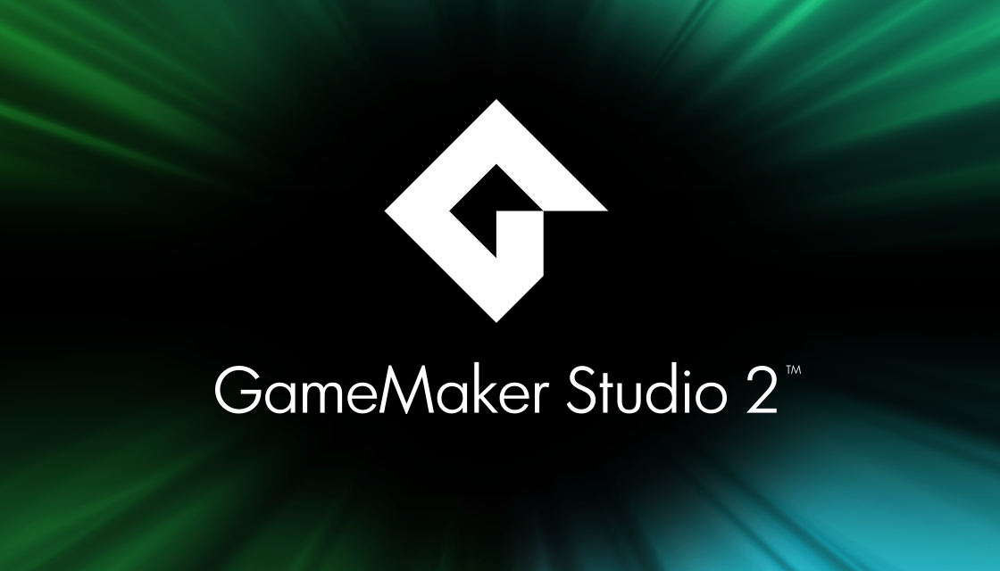
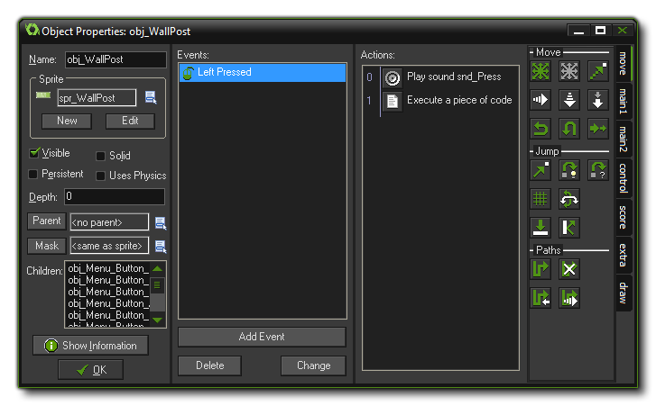
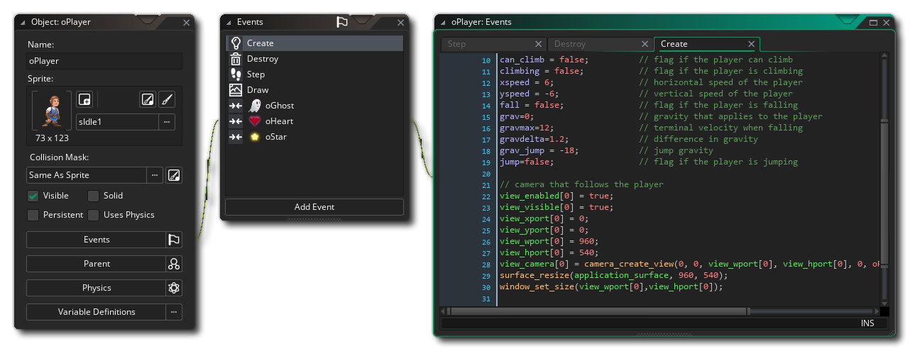

GameMaker
¿Que es GameMaker?

Es un programa orientado al desarrollo de videojuegos. Se creó originariamente para
ayudar a estudiantes con pocas nociones de programación, y esa filosofía se mantiene
hoy en día.
Y, ¿quién creó Game Maker? Pues el profesor de estos estudiantes, Mark
Overmars. Tiene una interfaz muy sencilla que nos permite hacer prototipos a los pocos
minutos, ya que tiene acciones predefinidas que podemos usar simplemente haciendo
Drag&Drop (arrastrar y soltar) y usar las imágenes y sonidos que tenemos rápidamente
para ver los resultados.
Con la versión actual nos permite exportar a múltiples plataformas, desde Windows, MAC
y Linux, hasta HTML5, iOS, Android, Windows Phone y últimamente incluso a videoconsolas
como PS3, PS4, PS Vita y Xbox.
¡Y todo esto sin cambiar de programa! Además, si queremos hacer cosas avanzadas, tiene
un lenguaje propio llamado GML, que nos permite hacer cosas como: Juegos multijugador,
Utilizar Inteligencia Artificial para el movimiento de los enemigos, Aprovechar los
logros y las tablas de puntuación de todas las plataformas, Utilizar físicas, physics
en inglés, como en el juego de Angry Birds, Posibilidad de crear extensiones específicas
para cada plataforma. Juegos en 3D, etc.
Como vemos, los tipos de juegos que se pueden crear en Game Maker son muchos, y las
posibilidades infinitas, todo dependerá de la dedicación, en horas y horas, que hagamos
a nuestro proyecto.
Versiones de Game Maker Studio
Actualmente, tenemos una versión gratuita que nos permite acceder a todas las posibilidades
del programa, con la posibilidad de exportar a juegos para Windows solamente. La única pega
es que aparece una pantalla inicial con el logo de Game Maker. Esta es la versión que ellos
llaman FREE.
Si queremos optar a más opciones avanzadas, como modificar esa pantalla inicial, usar texturas
en las imágenes (ya explicaremos ese apartado cuando llegue), tener múltiples configuraciones
(por ejemplo, crear un juego gratuito y otro de pago), testeo en Android, tiene la versión
Professional, que cuesta actualmente 149,99$. Con esta versión también tenemos la posibilidad
de comprar los diferentes módulos de exportación que nos pueda interesar, aunque viene por
defecto las opciones de exportación de módulos para ordenadores de escritorio, es decir,
tenemos también las exportaciones de Mac OSX y Ubuntu Linux.
Si queremos la exportación para HTML5 el precio es de 99,99$, y el de Tizen (una nueva plataforma
parecida a Android que ha sacado Samsung) es de 199,99$. Si además queremos otras exportaciones
interesantes, como pueden ser iOS, Windows Phone 8 o Android, el precio de cada exportación es de
199,99$. Las exportaciones a videoconsolas son gratuitas, y tenemos para Xbox One, PS4, PS Vita y
PS3.
También hay que tener en cuenta el hardware que necesitamos. Por ejemplo, para exportar a Ubuntu
Linux, necesitamos un ordenador con ese sistema operativo, al igual que para exportar a iOS y/o
Mac OSX necesitamos un iMac o un MacBook Pro. Otro tema es que si queremos exportar para
videoconsolas necesitamos entrar en programas de desarrolladores de cada plataforma, dónde existen
otros requisitos que hay que tener en cuenta.
También existe una versión llamada Master Collection, que con un precio de 799,99$, permite la
exportación de todos los módulos que hemos comentado anteriormente, y además nos ofrecen todos
los módulos futuros que vayan a existir. Por ejemplo, si tenemos muy claro que queremos hacer
juegos para Android, podríamos adquirir la versión Professional + el módulo de Android, con un
precio de 199,99$ + 149,99$. Eso hace un total de 349,98 dólares. Si además queremos también
exportar para iOS, podemos adquirir el módulo de iOS por 149,99$ más, o valorar la versión Master
Collection por un poco más de diferencia. Podéis ver todas las opciones en una tabla que hay en su
página web
Caracteristicas
El programa está diseñado para permitir a sus usuarios desarrollar fácilmente videojuegos sin
tener que aprender un lenguaje de programación como C++ o Java. Para los usuarios experimentados
Game Maker contiene un lenguaje de programación de scripts llamado Game Maker Language (GML),
que permite a los usuarios personalizar aún más sus videojuegos y extender sus características.
Los videojuegos pueden ser distribuidos bajo cualquier licencia sujeta a los términos del EULA
de Game Maker, en archivos binarios ejecutables ".exe", paquetes Android ".apk", y conjuntos de
script HTML5, como código fuente con extensión .gmx (GM: Studio y GM: HTML5), .gm81 (Versión 8.1),
.gmk (versiones 7.x y 8.x), .gm6 (versión 6.x), .gmd (versiones 5.x y 4.x), y .gmf (versión 3 e
inferiores). Los usuarios de Game Maker tienen permitido distribuir e incluso vender sus creaciones
mientras cumplan con los términos del EULA de Game Maker, que prohíbe un número de programas
ilegales como los que involucran uso no autorizado de material con derechos de autor o los que
rompan la ley en general. Actualmente hay varios videojuegos creados con Game Maker que se venden
en Steam, y otros que se distribuyen gratuitamente en Gamejolt.

La interfaz principal para el desarrollo de videojuegos de Game Maker usa un sistema de "arrastrar y
soltar", que permite a los usuarios que no están familiarizados con la programación tradicional crear
videojuegos intuitivamente organizando íconos en la pantalla. Game Maker viene con un conjunto de
bibliotecas de acciones estándar, que cubren cosas como movimiento, dibujo básico, y control simple
de estructuras. Para extender la funcionalidad de arrastrar y soltar de Game Maker, los usuarios
pueden construir bibliotecas de acciones personalizadas para agregar nuevas acciones a sus video
juegos.
Estas pueden ser creadas (generalmente por usuarios más avanzados) usando la herramienta de
generación especial de bibliotecas.
Lenguaje GML
Game Maker usa su propio lenguaje de programación, Game Maker Language (GML), influenciado
principalmente por el lenguaje C y Pascal, con el que se pueden conseguir videojuegos complejos,
pues aunque Game Maker está diseñado para la creación de videojuegos en 2 dimensiones, usando
GML se pueden conseguir videojuegos 3D avanzados tales como un videojuego de disparos en primera
persona (FPS).

El desarrollo de un videojuego es realmente simple, al basarse en el manejo de:
° Recursos (gráficos, sonidos, fondos, etc.), que se asignan a objetos.
° Eventos (presionar una tecla, mover el ratón, etc.), a través de los que se ejecutan comandos.
° Objetos, sobre los que se actúa en el videojuego.
Las acciones del videojuego se pueden programar de dos formas distintas:
° La interfaz drag & drop («arrastrar y soltar»): el programador arrastra «cajas» a una lista;
cada una de esas "cajas" realiza una determinada acción. Se gana en facilidad de manejo, a
cambio de una menor flexibilidad y potencia.
° El lenguaje GML (Game Maker Language): es el lenguaje de programación propio de Game Maker,
más potente, con el que se puede acceder a todas las funciones y posibilidades de Game Maker.
La sintaxis de la programación en GML es muy flexible, es indiferente la forma en la que se
aplican algunas reglas a la sintaxis, y entre ellas están:
° Posibilidad de incluir o no el punto y coma (";") al final de cada línea.
° Delimitar bloques de código con begin y end o con llaves ("{" y "}").
° Operador de igualdad, es indiferente si se usa un doble igual ("==") para leer el valor de una
variable o para escribir un valor.
Game Maker no compila los ejecutables de los juegos, sino que pasa el código por su propio intérprete
para formar los ejecutables de los juegos. Por ello, no resulta muy eficiente para grandes proyectos.
Overmars ha confirmado que no piensa compilar jamás el GML.
A partir de la versión 6.1 se empezó a usar Direct3D para los gráficos, lo cual resultó en una baja de
velocidad en los juegos en comparación con la versión 5.3a, que utilizaba DirectDraw. También hay
soporte para bibliotecas de enlace dinámico hechas en C++, Delphi y Pascal, y se pueden crear
videojuegos 3D o con soporte multijugador, entre otras funcionalidades.
Game Maker ha atraído un número sustancial de usuarios; principalmente porque permite es accesible
tanto para los usuarios principiantes, como para los usuarios más avanzados que realizan tareas más
complejas. No está limitado en la creación de videojuegos como otros programas, pues admite la
creación de diversos géneros de videojuegos, incluyendo videojuegos de plataformas, disparos en
primera persona, disparos en tercera persona, videojuegos multijugador, videojuegos de rol y video
juegos de simulación. También es posible crear aplicaciones de otros tipos con Game Maker debido a
la flexibilidad que brinda.